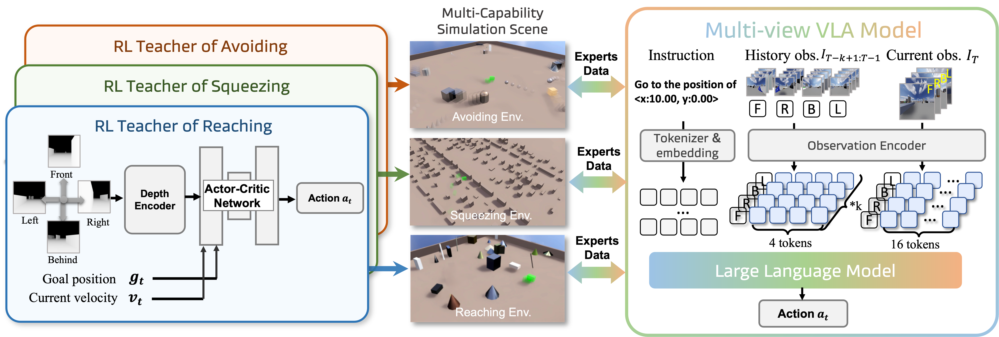

We introduce MM-Nav, as a multi-view VLA (with 360° observation) based on pretrained large language models and visual
foundation models. For large-scale navigation data, we collect expert data from three reinforcement learning (RL)
experts trained with privileged depth information in three challenging tailor-made environments for different navigation
capabilities: reaching, squeezing, and avoiding.